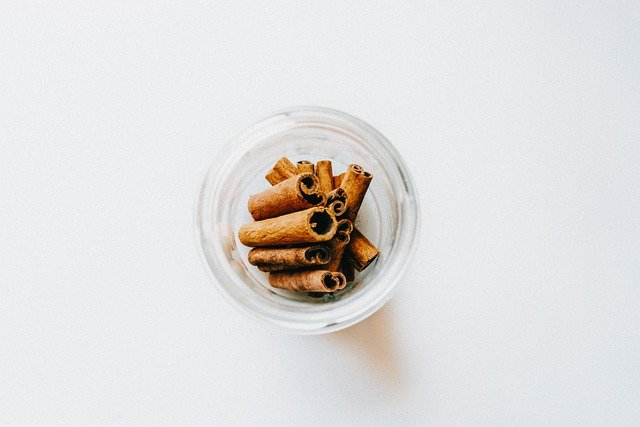
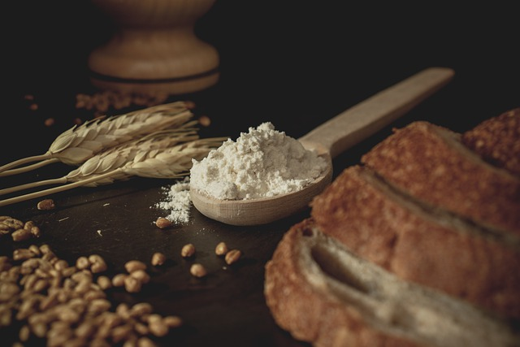
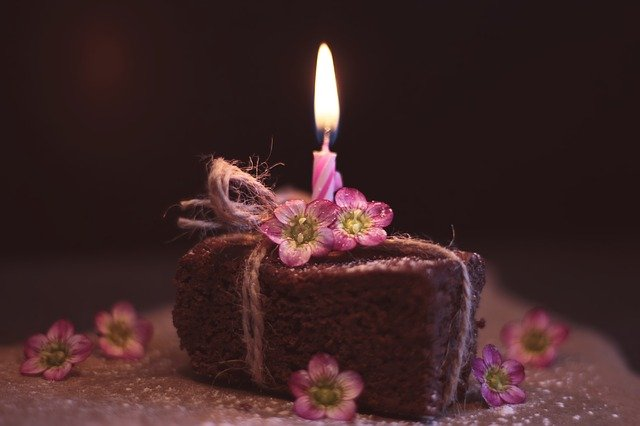

Episode 1: Spice Cakes, Leavening, and Really Long Book Titles
What makes a spice cake, or any cake in general? What is leavening? Why do old books have such long titles?
Before starting this recipe, I recommend preparing all ingredients and tools.



Spice Cake Ingredients:
- 1 cup of flour
- ¼ cup sugar
- ½ tsp baking soda
- ½ tsp baking powder
- ½ tsp chai spice
- ¼ cup milk
- ¼ cup oil
- ¼ cup apple sauce
- ¼ cup vanilla yogurt
Tools:
- 2 medium bowls
- whisk or spoon
- spatula
- 8 inch round cake pan
Save this for later
- 1 TBSP oil
- 1 TBSP flour
- A paper towel or any clean towel that you are comfortable getting oil on
Alright, let's get started!